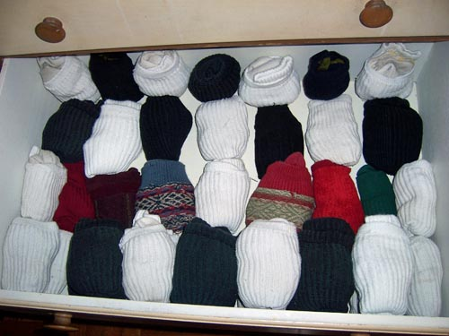

I only have two types of socks. One is for everyday wear. The other is for dress occasions. I fold my socks into a ball after I do my laundry, so they are always together. Here, have a picture.

It's about what my drawer looks like. Except all of mine are white, and aren't as organized.